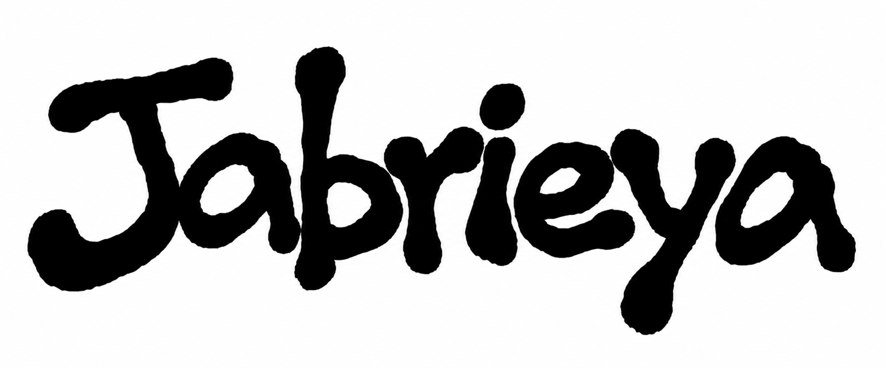

SEPT 22, 2026
starting over, again
i changed the website again, but this time i think i finally want it to feel like a real blog.
read more
a small blog about studying, building, writing, and life in tokyo.
SEPT 22, 2026
i changed the website again, but this time i think i finally want it to feel like a real blog.
read moreSEPT 20, 2026
rebuilding my study routine, thinking about college, and trying to make space for the future i actually want.
read moreSEPT 18, 2026
a few ideas i want to explore, from project k to smaller things that can help me learn how to code.
read more